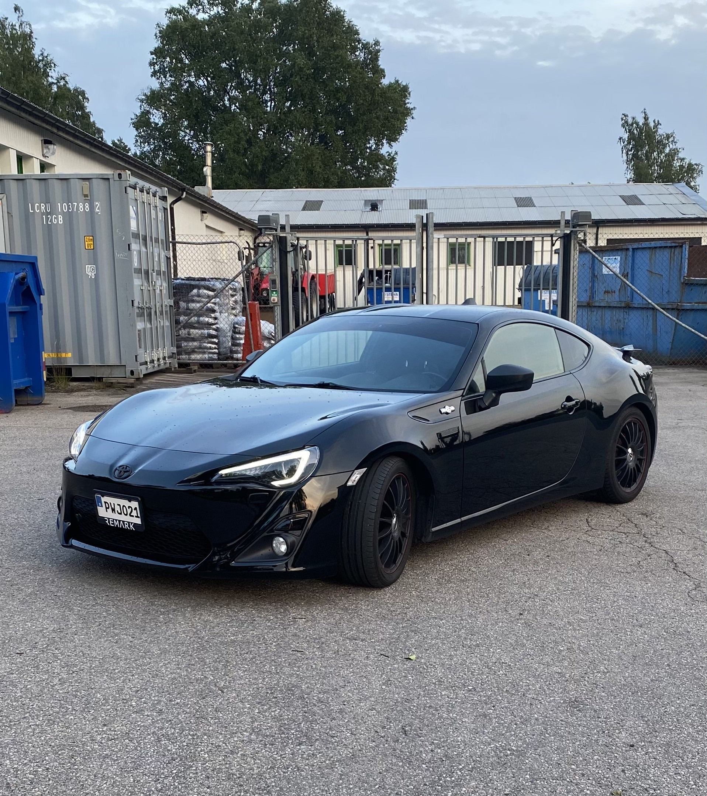

My Journey with Cars
I'm Kenan Maslan, a 22-year-old student at Linnaeus University. While my days are often filled with lectures and study sessions, my true passion lies in the world of cars.
For me, cars are not just about transportation; they are a canvas for creativity, a source of thrill, and a symbol of the journey I am on.
My fascination with cars goes beyond just driving. I love working on my car, understanding its mechanics.
I enjoy making tweaks here and there. Every moment spent under the hood is a moment of discovery and learning.
The road, to me, represents endless possibilities. Whether it's a drive through the city streets or a long cruise on the highway.
Each journey brings new experiences and a sense of freedom that's hard to find elsewhere.